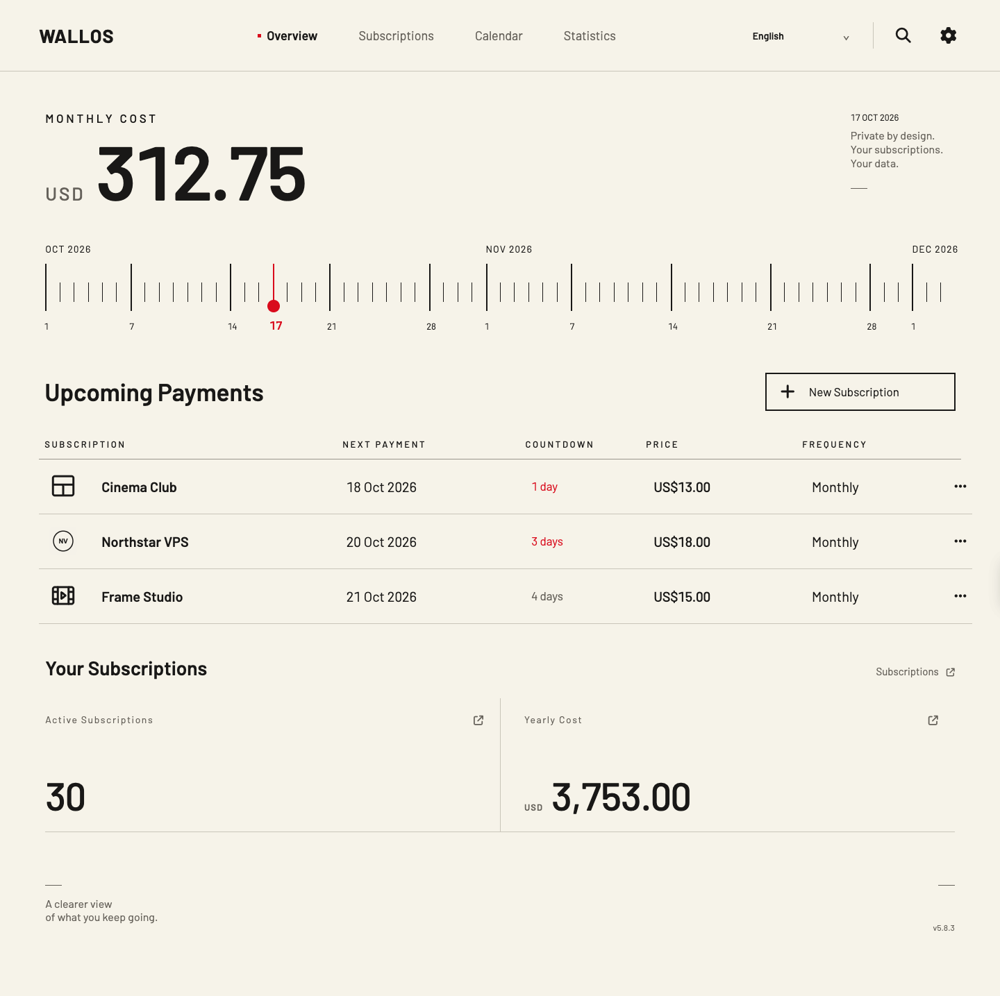
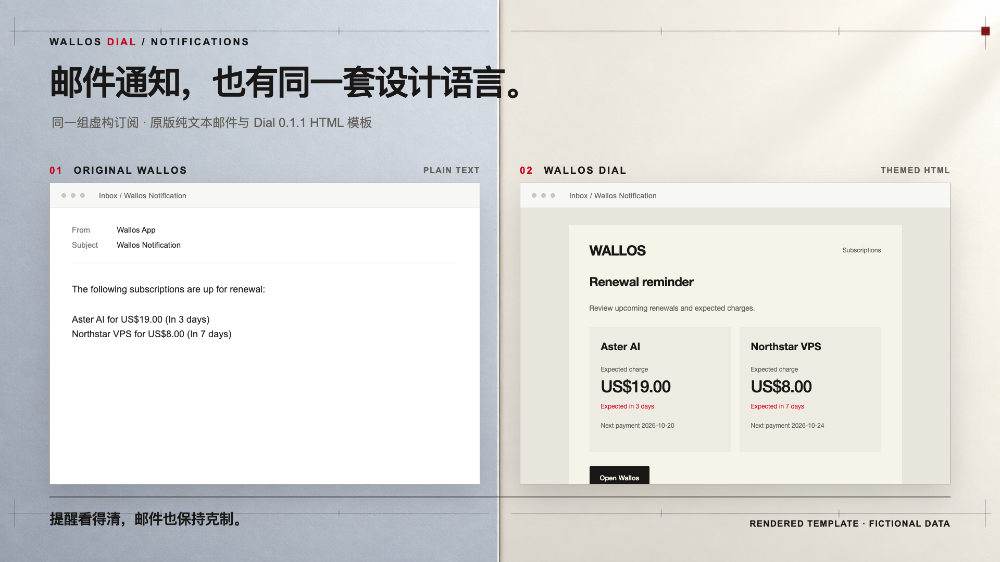

Wallos Dial 1.0.0 · 适配 Wallos 5.8.3
每笔续订，
一目了然。
Wallos Dial 为 Wallos 设计了一套清晰的桌面界面。月度费用、付款日期和倒计时集中呈现；订阅可按分类整理，每项还能选择适合自己的图标样式。下方实拍截图使用虚构数据，英文界面可切换为简体中文。

设计思路
订阅支出，清楚有序。
暖白底、黑色数字、精确日期刻度与少量红色，贯穿桌面应用。下方均为使用虚构数据拍摄的 1.0 实际界面。


每项订阅都能选择图标。
保留原有 Wallos Logo、选择九枚统一绘制的中性图标，或上传私人图片到「我的图标」。每项还可设置有无边框、彩色或单色，以及 80%–120% 的大小。
图标操作与上传限制 ↗

真实 PHP 应用 · 虚构记录
安装之前，先自己体验。
公开 Demo 运行基于 Wallos 5.8.3 的 Wallos Dial 1.0.0，放入 30 条虚构订阅。环境只读：可浏览总览、分类订阅、详情、日历、统计及仅供查看的分类管理页，也可独立切换界面语言。新增、编辑、图标上传和账户设置需要自行安装。
按自己的方式使用
熟悉的操作，更多自主空间。
管理分类
按账户新增、改名、排序、合并和删除空分类。分类说明 ↗
选择图标样式
原有 Logo 会保留；内置图标为原创中性符号，「我的图标」只属于当前账户。图标说明 ↗
保留 Wallos 操作
继续新增、编辑和管理订阅，在列表或网格中搜索、筛选、排序；通知与设置功能仍可使用。
切换界面语言
支持英文、简体中文、繁体中文及 Wallos 的其他语言。自行填写的名称和备注保持原样。
备份两处数据
「我的图标」保存在 SQLite，原有上传 Logo 保存在 Logo 数据卷。升级前请同时备份。
固定兼容版本
1.0.0 固定适配 Wallos 5.8.3。上游推出新版本后，需要再发布经过审查与测试的 Dial 镜像。
自行部署
从固定版本开始。
仓库的 Compose 文件固定使用 ghcr.io/lukevoidx/wallos-dial:1.0.0，默认只监听 127.0.0.1:8282。访问权限、数据和更新由你自己管理。
git clone https://github.com/LukeVoidX/wallos-dial-theme.git
cd wallos-dial-theme
docker compose up -d在运行 Docker 的机器上打开 http://127.0.0.1:8282。若要接入原有 Wallos 账本，请先备份 SQLite 数据库和上传的 Logo，核对 Compose 挂载路径，并在数据副本上排练迁移与回退。
常见问题
切换前需要知道的事。
这是 Wallos 官方主题吗？
Wallos Dial 是独立开发的 GPLv3 源码叠加层，构建为 Docker 镜像；不隶属于 Wallos，也不是应用内置的主题选项。
Wallos 更新后会自动兼容吗？
1.0.0 针对 Wallos 5.8.3 构建和测试。新的上游版本需要兼容检查和经过验证的新镜像。
在线 Demo 可以修改数据吗？
不能。30 条记录均为虚构，公开路由只读；可以查看分类，但修改分类和上传图标需要自行安装。
已有 Logo 会丢失吗？
原有 Wallos Logo 文件会保留，选择「原图」即可再次显示。升级前要备份 Logo 数据卷和 SQLite 数据库。
可以上传 SVG 吗？
「我的图标」接收受限制的 SVG、PNG、JPEG 和 WebP。SVG 经检查后转为 PNG；私人图标库有数量和容量上限。查看具体限制 ↗
切换语言会翻译已有数据吗？
界面标签会切换语言；用户填写的订阅名称、分类和备注保留原文。